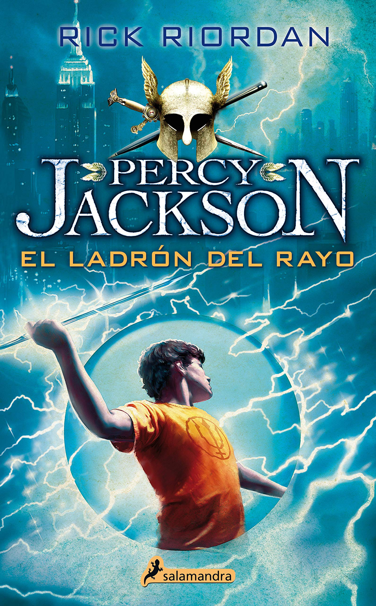

Percy Jackson - Rick Riordan
1. El Ladrón del Rayo

Sinopsis
¿Qué pasaría si un día descubrieras que, en realidad, eres hijo de un dios griego que debe cumplir una misión secreta? Pues eso es lo que le sucede a Percy Jackson, que a partir de ese momento se dispone a vivir los acontecimientos más emocionantes de su vida. Expulsado de seis colegios, Percy padece dislexia y dificultades para concentrarse, o al menos ésa es la versión oficial. Objeto de burlas por inventarse historias fantásticas, ni siquiera él mismo acaba de creérselas hasta el día que los dioses del Olimpo le revelan la verdad: Percy es nada menos que un semidiós, es decir, el hijo de un dios y una mortal. Y como tal ha de descubrir quién ha robado el rayo de Zeus y así evitar que estalle una guerra entre los dioses. Para cumplir la misión contará con la ayuda de sus amigos Grover, un joven sátiro, y Annabeth, hija de Atenea.
Reseña
La guerra en el Olimpo es inminente. Alguien ha robado el rayo de Zeus y solo Percy Jackson podrá recuperarlo. Percy es un niño de doce años que un buen dia se entera de que es un semidiós y su mejor amigo Grover, un fauno (cabra de ombligo para abajo). Cuando su madre es raptada, Percy y sus amigos emprenderán una gran aventura para conseguir salvarla y recuperar el rayo de Zeus.
Percy Jackson y el ladrón del rayo es la primera novela de la saga Percy Jackson y los dioses del Olimpo de Rick Riordan. Un libro juvenil de aventuras que engancha desde la primera página. Puede que no sea una obra maestra; tampoco lo pretende. Es divertido, entretenido y sus personajes empatizan rápido con el lector. Desde el primer momento llama la atención la forma en la que esta narrado. Se utiliza un lenguaje dinámico y juvenil e incluso con un toque gamberro de vez en cuando. Narrado en primera persona, Percy Jackson y el ladrón del rayo explora el lenguaje juvenil y una forma de hablar desenfadada (que no incorrecta) que he podido ver en contadas ocasiones. En los personajes, los dioses del Olimpo se entremezclan con los mortales y solo se distinguen de ellos en el poder que ostentan.
Una reinterpretación, curiosa en muchas ocasiones, de los olímpicos adaptados a nuestros días. Los jóvenes que aparecen son muy creíbles (pese a que no todos sean humanos del todo); sus relaciones y reacciones no resultan chocantes ni inverosímiles. La historia es autoconclusiva pero deja un par de cabos abiertos para retomarlos en próximos libros.
La estructura de la acción es la típica de los libros de aventuras con un héroe principal. El chico normal que descubre que es especial cuando se enfrenta a un conflicto y a raíz del cual surge la acción que se desarrollara durante el resto del libro. Los coprotagonistas también son los típicos pero el lector rápidamente puede empatizar con ellos. Esta la figura del mejor amigo, Grover, y de la chica, Annabeth, aunque en esta ocasión nos la presentan como una amiga simplemente.
.jpg)